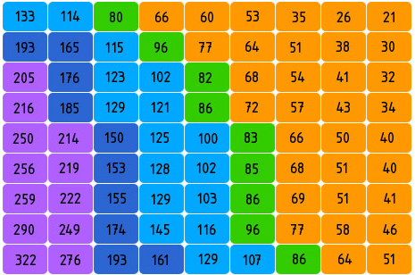
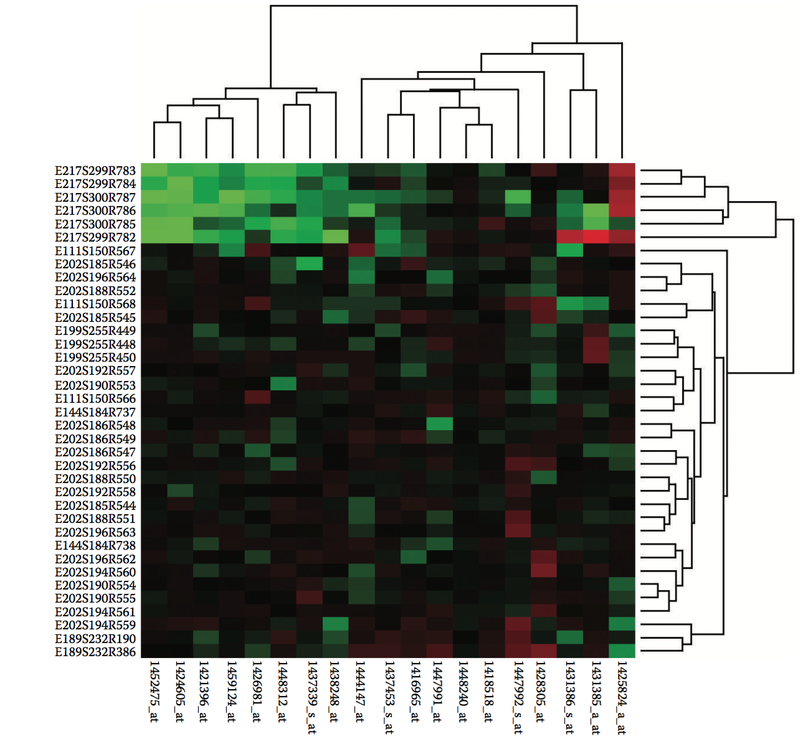

色块图
色块图的简介

色块图，由小色块有序且紧凑的组成的图表。色块图的最大好处是，2维画布上的空间利用率非常高。理论上小色块的大小是可以等于硬件像素的大小。想象一下，如果用每个像素直接编码数值，一块200px*200px的小屏幕，也可以最多编码40000子项！
所以色块图特别适合用于直接对数据量较大的、相对原始的数据进行分析。比如：生物基因科学领域，色块图常被用于微阵列数据分析。
另外，关于颜色的用法有两点需要强调一下：
- 如果是应对展示用的场景，数据量不大、颜色分类数量小于或等于
7个，可以采用分类的颜色映射。 - 如果应对，分析相关的需求，为了更有效率的使用色块图，我们建议使用连续（渐变）的颜色映射数值。由于人眼对颜色的分辨力有限，所以用于编码的颜色不宜过多，我们推荐的颜色的数量在
3～11个之间。
英文：color map
色块图的构成

| 图表类型 | 色块图 |
|---|---|
| 适合的数据 | 两个分类字段，一个连续字段 |
| 功能 |
对比两个分类字段对应的数值大小
展示两个分类字段对应的数值分布
|
| 数据与图形的映射 | 两个分类数据字段分别映射到横轴和纵轴，一个数值或分类字段映射到颜色。 |
| 适合的数据条数 | 超过30条数据，不超过区域所含屏幕像素个数的数据量 |
色块图的应用场景
适合的场景
例子1: 适合应用到数据展示。下图是模拟的杭州地铁票价图。
var sites =
["湘湖", "滨康路", "西兴", "滨和路", "江陵路", "近江", "婺江路", "城站", "定安路", "龙翔桥", "凤起路", "武林广场", "西湖文化广场", "打铁关", "火车东站", "闸弄口", "彭埠", "七堡", "九和路", "九堡", "客运中心", "下沙西", "金沙湖", "高沙路", "文泽路"];
var data = [];
for(var i = 0; i < sites.length; i ++){
for(j = sites.length - 1; j >=i; j--){
var price = 0;
var step = Math.abs(j - i);
if (step <= 2) {
price = 2;
} else if (step <= 4) {
price = 3;
} else if (step <= 7) {
price = 4;
} else if (step <= 13) {
price = 5;
} else if (step <= 16) {
price = 6;
} else if (step <= 21) {
price = 7;
} else {
price = 8;
}
var obj = {from: sites[i],to: sites[j],price: price};
data.push(obj);
}
}
var Stat = G2.Stat;
var Frame = G2.Frame;
var chart = new G2.Chart({
id: 'c1',
width: 800,
height: 500,
plotCfg: {
margin: [10,50,70,100]
}
});
var defs = {
'from': {
values: sites
},
'to': {
values: sites.slice(0).reverse()
}
};
//chart.coord().transpose();
chart.axis('to',{
title: null,
grid: null,
tickLine: null
});
chart.axis('from',false);
chart.source(data,defs);
chart.polygon().position('from*to')
.shape('stroke')
.color('price')
.label('price');//.label('count',{offset: -1});
// 在上面添加文本
for (var i = 0; i < sites.length - 2; i ++) {
var site = sites[i];
var nextSite = sites[i + 1];
chart.guide().text([nextSite,site],nextSite);
}
chart.render();
说明：
- 站名映射到了
x、y轴，以确定位置 - 票价映射到
颜色 - 票价数据是模拟的，仅表示大概情况
例子2: 适合应用到简单的数据分析。2015年，全年股指的波动情况。
$.getJSON('/data.json?filename=tape',function(data){
var Stat = G2.Stat;
var Frame = G2.Frame;
var chart = new G2.Chart({
id: 'c2',
width: 800,
height: 500,
plotCfg: {
margin: 40
}
});
// 获取当前月的第几周,从 0 开始
function getMonthWeek(date) {
var year = date.getFullYear();
var month = date.getMonth();
var monthFirst = new Date(year,month,0);
var intervalDays = Math.round((date.getTime() - monthFirst.getTime()) / 86400000);
var index = Math.round((intervalDays + monthFirst.getDay()) / 7);
return index;
}
// 加工数据
// 增加涨幅、跌幅
// 添加所属月、周几、每个月的第几周
data.forEach(function(obj){
var date = new Date(obj['日期']);
var month = date.getMonth();
//obj.range = (obj.end - obj.start) / obj.start;
obj.month = (month + 1).toString();//.toString();
obj.day = date.getDay();
obj.week = getMonthWeek(date).toString();
});
var defs = {
month: {
type: 'cat',
values: ["1", "2", "3", "4", "5", "6", "7", "8", "9", "10", "11",'12']
},
day: {
type: 'numberCat'
},
week: {
type: 'cat',
values: ['5','4','3','2','1','0']
},
'涨跌幅': {
type: 'linear',
min: -10,
max: 10,
nice: false
//ticks: [-10,-5,0,5,10]
},
time: {
type: 'time'
}
};
chart.axis(false);
chart.col('日期',{
type: 'time'
});
chart.tooltip({
map: {
title: '日期'
}
});
chart.source(data,defs);
//chart.coord().reflect(); // y轴，翻转
chart.facet(['month'],{type: 'list',cols: 4,margin: 40}); //'#308d07-#efff314-#E23511'
chart.polygon().position('day*week*日期').color('涨跌幅','green-yellow-red');
chart.render();
});
说明：
- 将某月
星期几映射到x轴，第几个星期映射到y轴 - 股指映射到
颜色，从绿到黄到红，表示股指从低到高 - 对
月份进行分面
例子3: 适合应用到聚类分析。下图是用于基因芯片的聚类分析的分群色块图

说明：（令x轴基因片段为A组，y轴基因片段为B组）
- 将A组基因名，映射到
x轴，将B组基因名，映射到y轴 - 将A组基因表达程度映射为
红色，B组程度基因表达映射为绿色，基因的表达程度映射为亮度和饱和度 - 通过算法将相似度高的基因分组，将关系画成树图
色块图与其他图表的对比
色块图和热力图
- 数据类型上看：热力图是用两个
连续字段确定数值点的位置，色块图是用两个分类字段确定数值点的位置。 - 功能上看：热力图主要用于展示数据的
分布情况，色块图在观察数据分布以外，还能进行列对比和行对比。